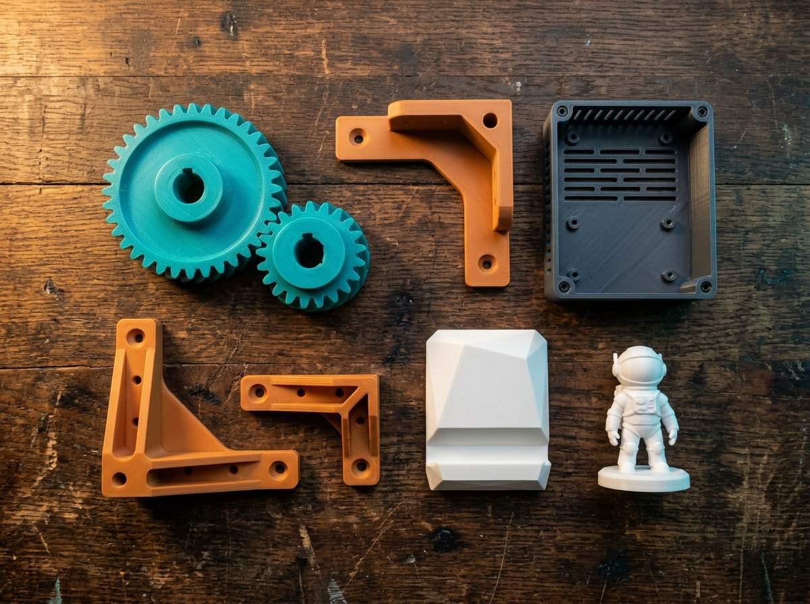

Заказчикам
Нужна деталь? Найдите мастера рядом
- Загрузите модель STL или 3MF — сайт сразу оценит объём и бюджет
- Получите отклики от печатников Норильска с ценой и сроком
- Уточняйте любые нюансы во встроенном чате прямо на сайте
- Выберите лучшего мастера по рейтингу, отзывам и оборудованию